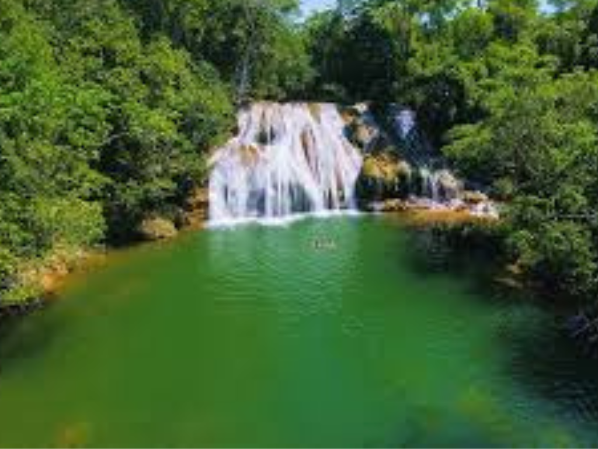

Mato Grosso do Sul é um estado localizado na Região Centro-Oeste do Brasil, conhecido por suas paisagens naturais exuberantes e rica biodiversidade.
Abriga grande parte do Pantanal, uma das maiores áreas úmidas do mundo, além de regiões de Cerrado que contribuem para sua diversidade ambiental.
Sua economia é baseada principalmente no agronegócio, com destaque para a pecuária de corte e a produção de soja, milho e celulose.
A capital, Campo Grande, é um importante centro urbano, caracterizado por seu planejamento e qualidade de vida.
O estado também se destaca pelo ecoturismo, com destinos como Bonito, famoso por suas águas cristalinas e atividades de contato com a natureza.

Voltar